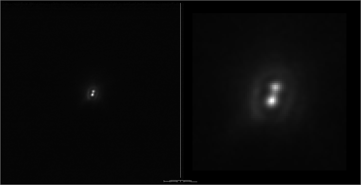
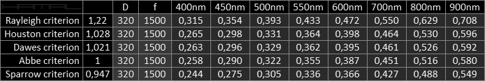

Double and Multiple Stars

Binary Star System
-
HD 156389
-
separation 0.433″
|
|
Detector -
Optics -
Filters -
Concept -
|
ASI 290MM-C
Homemade Newton 320/1500 Truss Telescope + TeleVue 3x Barlow Lens
Baader RGB-B (380 – 510 nm) Bandpass Filter
DIAVS
|
|
|
Other names
CCDM J17141+5608AB,
GEN +1.00156389,
PPM 35884,
WDS J17141+5608AB,
STT 327,
GSC 03891-00660,
SAO 30306,
WEB 14235,
ADS 10425 AB,
HD 156389,
SKY 31055,
WISE J171406.80+560801.9,
AG+56 1096,
HIC 84300,
TIC 198392281,
YZ 56 9188,
BD+56 1959,
HIP 84300,
UBV 14706,
Gaia EDR3 1432714679500186624,
GC 23300,
IDS 17122+5615 AB,
UCAC4 731-055433,
Gaia DR2 1432714679499697920,
GCRV 9954,
2MASS J17140681+5608017,
uvby98 100156389
|
|
The criterion of the diffraction limit of resolution - Newton 320/1500
.

|